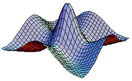

Research Topics
Hal Tasaki's main web page / Last modified: August 17, 1997

One of the aims of physics is to elicit "universal" properties from the world we observe (in various manners), and truly "understand" them.
I have been mostly interested in various physical problems in which many (or infinitely many) degrees of freedom generate nontrivial physics, and worked on problems from such fields as statistical physics, condensed matter physics, and field theories.
I have been trying to prove mathematically rigorous results which are at the same time important and enlightening from physicists' point of view.
I describe some of the topics in the following.
I have been trying to get the canonical distribution (which is the most useful in equilibrium statistical physics) only from quantum mechanical time evolution and (weak) assumptions on the initial state.
As I describe below, I obtained a general picture and a rigorous example.
But I still do not know what is a truly meaningful goal of this research.
(The announcement and an informal technical note which (only) contain mathematical proofs are now available from Los Alamos.)
-
Basic plan:
As in any textbook of statistical physics, we consider a closed quantum mechanical system which consists of mutually interacting "subsystem" and "heat bath".
We start from an initial pure state (which satisfies some conditions), and consider standard quantum mechanical time evolution.
After a sufficiently long time, we observe a physical quantity for the subsystem.
We want to derive the canonical distribution in the sense that, at sufficiently large and typical time, the quantum mechanical expectation value of an arbitrary operator of the subsystem is essentially equal to the desired canonical average of the same operator.
(Thus the canonical distribution is recovered including fluctuation.)
Since we only consider a single observation, there is no problems about disturbance by an observation.
-
General picture:
If the stationary states (i.e., eigenstates of the Hamiltonian) of the whole system satisfy the "principle of equal weights for eigenstates", and the energy eigenvalues are sufficiently "disordered", we can show that the above derivation of the canonical distribution indeed works.
-
A rigorous example:
In order to demonstrate the above picture is not empty (and also to convince myself), I constructed a rigorous example.
The subsystem is arbitrary except that the energy eigenvalues are nondegenerate.
The heat bath must have an artificial fine structure that the density of states is a piecewise continuous function.
Apart from the fine structure, the density of states of the bath is essentially arbitrary.
The coupling between the subsystem and the bath is, unfortunately, rather artificial.
In such a system, we can rigorously establish the above derivation of the canonical distribution without any unproven hypotheses.
-
(Some of) remaining problems
It is desirable to have examples which are more physically realistic.
In particular I want to to have results which clearly demonstrate the important roles played by large degree of freedom and "non-integrability" of the system.
It is almost clear that one can never get healthy statistical physics or thermodynamics out of an exactly solvable model.
So we have to look for examples which are not "solvable", but the "non-solvable" models are difficult to treat simply because they are not solvable!
We have to find marginal models which are not exactly solvable, but still rigorously controllable.
(The present rigorous example indeed such a marginal model.
It is not exactly solvable, but can be treated rigorously by using a semiclassical analysis. (Semiclassical techniques are used merely as a theoretical tool since the model has no classical counterpart.))
The origin of strong ferromagnetic order observed in some materials has been a mystery for quite a long time.
It is notable that ferromagnetism is a phenomenon which takes place only when nonlinear interactions between electrons are sufficiently strong.
This makes ferromagnetism very hard to analyze theoretically, since the present theories of electrons in solids are mainly based on perturbations from non-interacting electron systems.
In short, ferromagnetism is a highly "non-perturbative" problem that takes place in strongly correlated many electron systems.
One strategy to understand the origin of ferromagnetism is to study the problem in highly idealized theoretical models.
It has become standard in such an approach to start from the so called Hubbard model.
The Hubbard model describes electrons in one of the bands which are mutually interacting via short range Coulomb interaction.
Even for the Hubbard model, however, it was not at all trivial to demonstrate the existence of ferromagnetic ordering.
In 1966, Nagaoka proved that a class of Hubbard models have ferromagnetic ground state when the strength of the Coulomb interaction U is infinite, and there is exactly one hole.
Until 1990's, this Nagaoka ferromagnetism had been the unique rigorous example of saturated ferromagnetism in the Hubbard model.
(In 1989, Lieb proved the existence of ferrimagnetic order in a (much larger and more natural) class of Hubbard models.)
I had spent several years on this problem and obtained some results as i describe below.
The proof of the existence of ferromagnetic ground state (and healthy spin wave excitation) in non-singular models is my favorite, and I regard it as the best work I have ever done.
-
Nagaoka ferromagnetism:
I gave a simple new proof, and slightly extended Nagaoka's theorem.
-
Flat-band ferromagnetism:
Mielke in 1991 and myself in 1992 proposed a new class of rigorous examples of ferromagnetism in the Hubbard model.
(Mielke's and my models share some properties, but are different.)
These models are rather special in that the lowest band (in the single-electron spectrum) is completely degenerate (i.e., the band is flat).
It was proved that these models have saturated ferromagnetic ground states when ever the Coulomb interaction U is finite.
This ferromagnetism is now called "flat-band ferromagnetism", and are regarded as another class of ferromagnetism which is in some sense in the opposite limit from the Nagaoka ferromagnetism.
-
Rigorous control of spin wave excitation and local stability of ferromagnetism in models with nearly flat bands:
Both the Nagaoka ferromagnetism and the flat band ferromagnetism take place in singular models, where the Coulomb interaction U or the density of states D, respectively, is infinitely large.
It is desirable to have ferromagnetism in a situation both U and D are finite.
As a first step, I treated models where the lowest band is no longer flat, but is nearly flat.
I was able to prove the local stability of ferromagnetic state, and the existence of spin-wave excitation with healthy dispersion.
The existence of spin wave excitation is quite important for a theory of ferromagnetism.
-
Ferromagnetism in non-singular Hubbard models:
In the work published in 1995, I treated a class of Hubbard models in any dimensions which have next nearest neighbor hoppings.
These models do not have pathological degeneracies, and the single-electron bands have healthy dispersions (i.e., are not flat).
These models exhibit standard Pauli paramagnetism when the Coulomb interaction U is vanishing.
It is also easily shown that the ground states of the models do not have saturated ferromagnetism if U is sufficiently small.
When U is sufficiently large, I proved that the ground state of the model exhibits saturated ferromagnetism.
This result proves for the first time that Hubbard models can exhibit saturated ferromagnetism in non-singular situations where U and D are both finite.
Moreover this is one of very few rigorous results in interacting electron systems which are essentially "non-perturbative."
One dimensional quantum antiferromagnetic Heisenberg model is one of the most standard and realistic models in idealized theories of condensed matter.
In 1983, Haldane made a fascinating and surprising predication about this old model.
He argued that the model has no energy gap when the spin S is a half-odd-integer like 1/2, 3/2, ..., but has an energy gap and a disordered ground state when the spin S is an integer like 1, 2,...
Starting from this fascinating prediction, there have been an exciting progress in physics related to the Haldane gap, which involved experimental, theoretical,and numerical approaches.
I have made some contributions to theoretical understanding of the Haldane gap.
-
Exactly solvable models which exhibit Haldane gap (or strong quantum fluctuation)
With Affleck, Kennedy, Lieb, and myself proposed a model of antiferromagnetic chain with S=1 in which we were able to establish the existence of Haldane gap (and related phenomena) rigorously.
This was the first rigorous demonstration that exotic behavior in integer spin chains predicted by Haldane is indeed possible.
The above models is now called AKLT model, and regarded as a standard starting point in theoretical investigations of haldane gap and related phenomena.
The exact ground state of the AKLT model is called VBS (valence-bond solid) state.
The VBS state provides clear intuitive picture of ground states in the Haldane phase, and is used also in interpretations of various experimental results.
We also constructed quantum spin models in higher dimensions which have disordered ground states (quantum liquid) because of strong quantum fluctuation.
-
Hidden antiferromagnetic ordering and related results:
The ground state of a Haldane gap system is system is disordered because of strong quantum fluctuation.
However one can find a hidden antiferromagnetic ordering within this disordered state.
This is the discovery of den Nijs and Rommelse, but I also reached the same conclusion later and applied it to analyze the phase structure of the S=1 chain and the magnetization process.
-
Hidden symmetry breaking and a mean field theory:
Kennedy and myself introduced a nonlocal unitary transformation for S=1 chains, and proposed a new point of view about the Haldane gap systems.
We argued that the S=1 chain has a "hidden Z2 x Z2 symmetry", and the Haldane phase is the phase which completely breaks this symmetry.
This theoretical picture enabled us to understand in a unified manner the three exotic features of the Haldane gap systems, namely, the existence of a gap, the hidden antiferromagnetic ordering, and edge excitations in an open chain.
Moreover the above unitary transformation can be used to construct a very simple and efficient variational calculation (mean-field theory) for the Haldane gap systems.
Koma and myself proved some general theorems about symmetry breaking in quantum many-body systems.
-
Long-range order implies symmetry breaking:
We proved that whenever a quantum many-body system has a symmetric infinite volume Gibbs state (or ground state) which has a long-range order, then it also has an infinite volume Gibbs state (or ground state) which explicitly breaks the symmetry.
This theorem is most meaningful when applied to Heisenberg antiferromagnets where the existence of symmetric states with long-range orders is proved by Dyson-Lieb-Simon and others.
-
Symmetry breaking and finite size effects:
Consider a quantum-many body system where the order operator and the Hamiltonian do not commute with each other.
When the infinite volume ground state breaks the symmetry, finite volume ground state is usually unique and symmetric because of quantum fluctuation.
In such a situation there should appear many low-lying excited states in the finite systems, and suitable linear combinations of these low-lying states and the ground state "converges" to infinite volume ground states with explicit symmetry breaking.
Such a picture had been believed for a long time, but we proved it as a general theorem.
This is a fascinating field, especially because of its close relation to critical phenomena and field theories.
I have not made any significant contributions, but proved some inequalities among critical exponents.
-
Hyperscaling inequalities:
Inequalities for Bernoulli percolation.
They have the precise form the hyperscaling relations, and are believed to be saturated in dimensions lower than the upper critical dimension.
They (rigorously) imply that the upper critical dimension of the model is not less than six.
This is a very fascinating field, where a very high theoretical standard had been achieved.
I started from this filed and wrote a few papers, but there are no essential contributions.
The following may be meaningful.
-
Critical phenomena in four dimensions:
Hara and myself studied the critical phenomena in lattice phi^4 model in four dimensions using the rigorous renormalization group technique developed by Gawedzki-Kupiainen and others.
For a weakly coupled model, we had a perfect control of critical phenomena of the susceptibility and the correlation length, and proved that there are logarithmic corrections to the mean-field behavior.
-
Upper critical dimension of random spin systems:
I proved some critical exponent inequalities based on the finite-size scaling idea.
They lead to optimal lower bounds for the upper critical dimensions in various random spin systems such as the spin glass and the random field models.
-
XY model in 1.99 dimensions:
The classical XY model undergoes a phase transition at a finite temperature in two dimensions, but has no finite temperature transition in one dimension.
What happens to the transition temperature in between the dimensions between one and two?
Koma and myself proved that the XY model in dimensions d<2 has no phase transition at finite temperatures.
This means that the transition temperature viewed as a function of the continuous dimension d has a discontinuity at d=2.
(Interesting!)